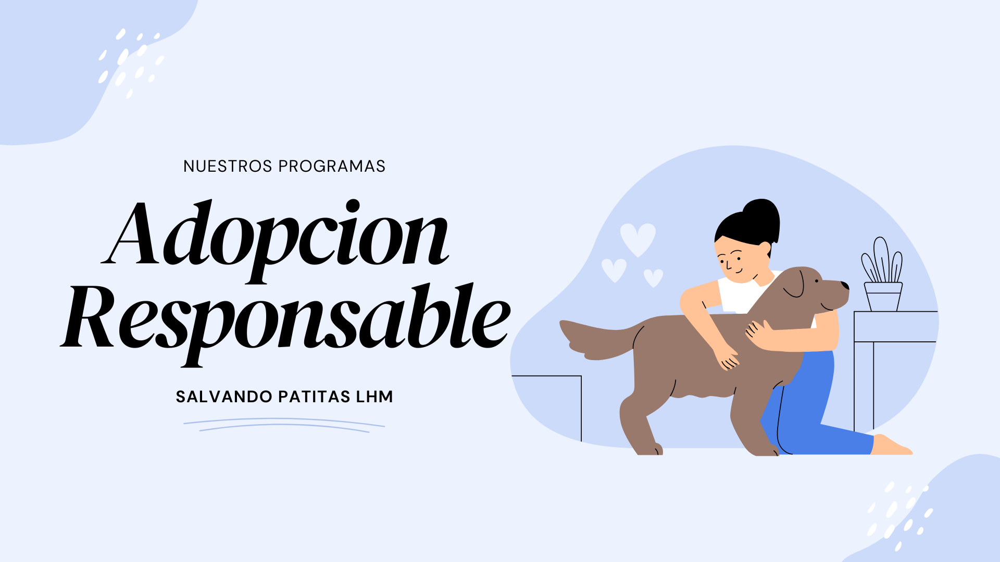
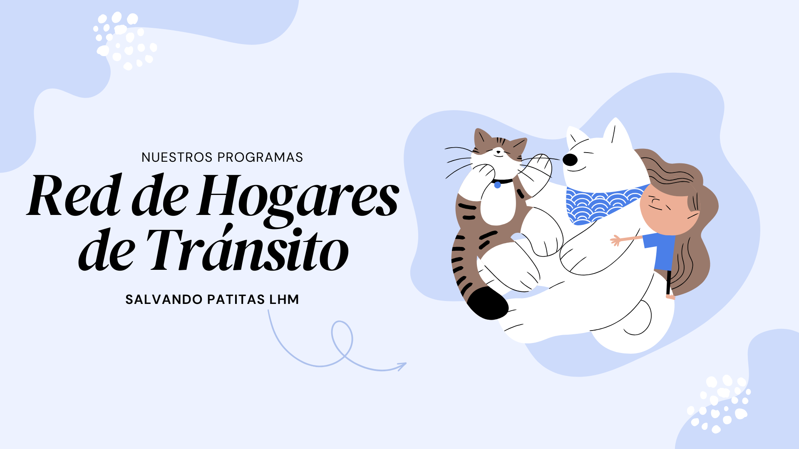
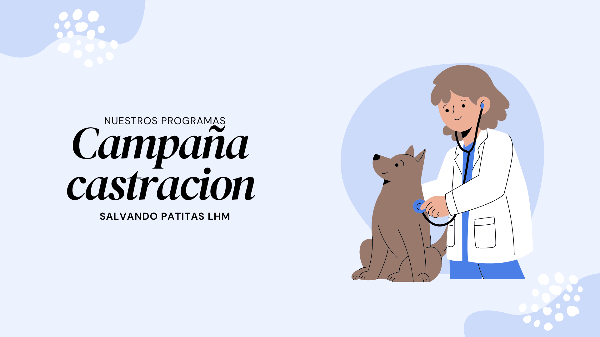

Si querés saber cómo sumarte rápidamente a nuestras actividades, podés ir directamente a la seccion de contacto.
NUESTROS PROGRAMAS

1. Adopción Responsable
Descripción: Buscamos familias adoptivas para nuestros perros y gatos rescatados, asegurándonos de que cada animal vaya a un hogar lleno de amor y cuidados.
Dirigido a: Cualquier persona que busque un nuevo miembro para su hogar.
¿Cómo participar?
- Completar el formulario de pre-adopción en nuestra web.
- Asistir a una entrevista con nuestros voluntarios.
- Preparar tu hogar para la llegada del animal.

2. Red de Hogares de Tránsito
Descripción: Brindamos un espacio cálido y temporal para animales que fueron rescatados en situaciones de vulneranilidad hasta que puedan ser adoptados o ser llevados a un hogar de rescatistas.
Dirigido a: Personas que no pueden adoptar permanentemente pero tienen un espacio para darles acogida de forma temporal.
Detalles de la iniciativa
- Duración
- Varía entre 15 días y 2 meses, dependiendo del caso.
- Gastos
- La ONG cubre el alimento, la atención veterinaria y en caso de necesitar movilidad tambien incluye.

3. Campaña de castracion
Descripción: Realizamos campañas de castración gratuitas y/o accesibles en zonas de alta vulnerabilidad, donde la intervención y asistencia del Estado resultan insuficientes.
Dirigido a: Personas en zonas de vulnerabilidad que no tienen la posibilidad de acceder a este procedimiento.
Pasos para acceder a la castracion
- Acercarse a uno de los puntos de la ong.
- Sacar un numero, ya que esta sera por orden de llegada.
- Esperar tu turno y retirar a tu mascota luego de la castracion.

4. Acciones Judiciales y Legislativas
Descripción: Reclamamos el cumplimiento de las leyes vigentes y apoyamos la presentación de proyectos legislativos que promuevan el bienestar y la protección animal.
Dirigido a:Autoridades y organimos del Estado, profesionales en el ambito legal y legisladores y funcionarios publicos
Tu ayuda, por más pequeña que parezca, salva vidas. Ya sea adoptando, transitando o compartiendo, sos parte del cambio.